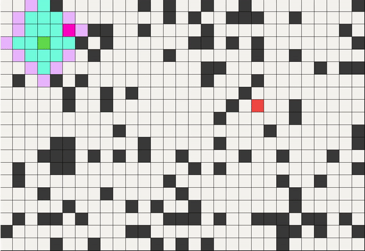
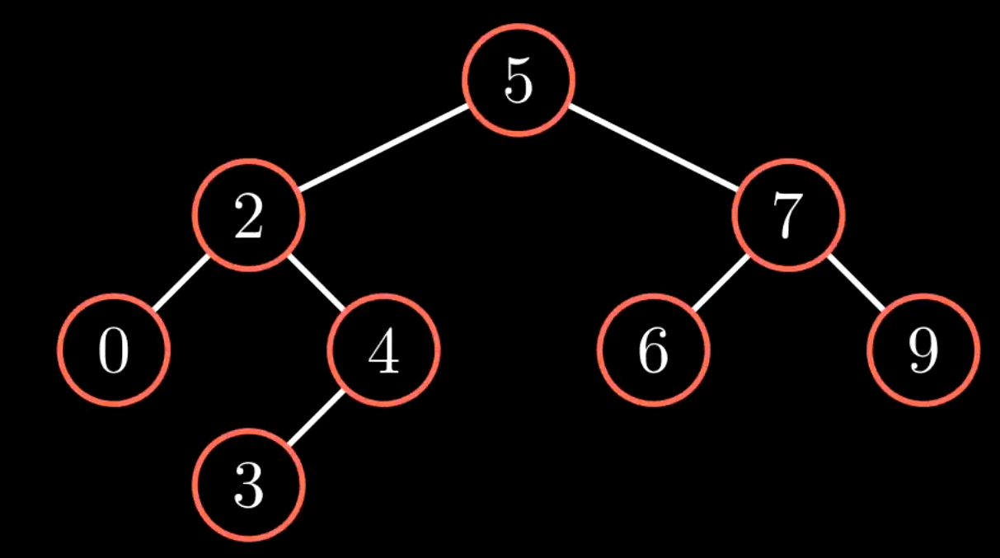

0. BFSとは
今回は、グラフ探索の基礎的なアルゴリズムであるBFS（Breadth-First Search：幅優先探索）について扱います！
BFSは、スタート地点から距離の近い場所から順番に探索していくアルゴリズムです。 スタート地点から移動できる場所を調べ、そこからさらに移動できる場所を調べる、という処理を繰り返します。 最終的には、スタート地点から到達できる場所すべてを探索できます。
身の周りの例では、ペイントツールの「塗りつぶし」のような処理にも、BFSと同じ考え方が使われます。
BFSの探索イメージ

同じ距離にある頂点を順番に調べてから、次の距離へ進みます。
BFSは迷路を解くだけでなく、スタートから各地点までの最短距離を求めることができます。 探索を終えると、各地点にスタートから何回移動すれば到達できるかが記録されます。
距離を記録した迷路の例

各マスの数値は、スタート地点からそのマスまでの最小移動回数を表します。
BFSは、二次元配列（グリッド）のようなグラフにも、木のグラフにも使えます。 今回はまず木のグラフで仕組みを確認し、その後、迷路のようなグリッドに応用します。
1. BFSの実装に使うQueue
BFSの探索にはQueue（キュー）を用います。まずはQueueの仕組みを復習しましょう。
Queueは、筒を横に倒したような構造です。後ろから要素を入れ、前から取り出す仕組みを持っています。 このように、先に入れた要素を先に取り出す方式をFIFO（First In, First Out）といいます。
BFSでは、発見した頂点をQueueに追加します。そしてQueueの先頭から頂点を取り出し、その頂点から移動できる場所を調べます。 先に発見した頂点から処理されるため、近い場所から順番に探索できます。
木のグラフでQueueを使う様子
動画を見ながら、頂点をQueueに追加する順番と取り出す順番に注目してください。
2. 木のグラフでBFSを実装する
ここからは、動画に登場する木のグラフを例に、BFSを言葉で整理してからコードにしてみます。
2-1. グラフを構築する
まず、頂点同士がどのようにつながっているかをプログラムで扱える形にします。 今回のグラフには、次の7本の辺があります。
今回扱う木のグラフ

5-2 / 5-7 / 2-0 / 2-4 / 7-6 / 7-9 / 4-3
辺の情報は、以下のように与えられているとします。
5 2
5 7
2 0
2 4
7 6
7 9
4 3例えば、頂点2につながっている頂点は0、4、5です。 そこで、各頂点について「隣接している頂点の一覧」を保存する配列を作ります。 このような表現を隣接リストといいます。
vector<vector<int>> G(N);
for (int i = 0; i < edge_num; i++) {
int a, b;
cin >> a >> b;
G[a].push_back(b);
G[b].push_back(a);
}
今回は無向グラフなので、頂点aから頂点bへ移動できるだけでなく、頂点bから頂点aへも移動できます。
そのため、G[a]とG[b]の両方に相手の頂点を追加します。
頂点数を10とした場合、Gには次のような情報が格納されます。
G[1] = {}
G[2] = {0, 4, 5}
G[3] = {4}
G[4] = {2, 3}
G[5] = {2, 7}
G[6] = {7}
G[7] = {5, 6, 9}
G[8] = {}
G[9] = {7}
※頂点1と8は、どの辺にもつながっていないため、空のリストになります。
2-2. 探索する
グラフを構築できたら、次はBFSを実行します。必要になるのは、距離を記録する配列distと、頂点を順番に管理するqueueです。
dist
各頂点までの最小距離を保存します。まだ探索していない頂点には-1を入れます。
queue
これから調べる頂点を、発見した順番に保存します。
探索の手順は次の通りです。
- 初期化：すべての頂点の
distを-1にします。 - スタート地点：スタート地点の
distを0にし、その頂点をQueueに追加します。今回は頂点5から始めます。 - 取り出す：Queueの先頭から頂点を1つ取り出し、
curとします。 - 隣接頂点を調べる：
G[cur]に保存された頂点を順番に確認します。 - 未探索なら追加：その頂点の
distが-1なら、dist[cur] + 1を記録し、Queueに追加します。すでに探索済みなら何もしません。 - 繰り返す：Queueが空になるまで、取り出しと隣接頂点の確認を繰り返します。
Queueに追加した時点で探索済みにしておくことで、同じ頂点を何度もQueueに追加することを防ぐ。 また、BFSでは近い頂点から順番に発見するため、最初に記録した距離が最短距離になる。迂回してたどり着いて場所が最短経路にはならない。
BFSの基本コード
// BFS のためのデータ構造
vector<int> dist(N, -1);
queue<int> que;
// 初期条件 (スタート地点は頂点 5)
dist[5] = 0;
que.push(5);
// Queue が空になるまで探索
while (!que.empty()) {
int cur = que.front();
que.pop();
// cur から辿れる頂点をすべて調べる
for (int nv : G[cur]) {
if (dist[nv] != -1) continue;
// 距離を更新して Queue に追加
dist[nv] = dist[cur] + 1;
que.push(nv);
}
}
Queueが空になったら探索終了です。distには、スタート地点からの最小距離が保存されています。
-1のままの頂点は、スタート地点から到達できなかった頂点です。
特定のゴールまでの距離を知りたい場合は、dist[goal]を出力すれば確認できます。
今回の探索結果（スタート：頂点5）
2
-1
1
3
2
0
2
1
-1
2
各マスは「頂点番号 / distの値」です。
2-3. 全体のコード
ここまでの処理をまとめると、次のようになります。
#include <bits/stdc++.h>
using namespace std;
int main() {
// 頂点数と辺数
int N, M;
cin >> N >> M;
// グラフ入力受取 (無向グラフ)
vector<vector<int>> G(N);
for (int i = 0; i < M; ++i) {
int a, b;
cin >> a >> b;
G[a].push_back(b);
G[b].push_back(a);
}
// BFS のためのデータ構造
vector<int> dist(N, -1);
queue<int> que;
// 初期条件 (頂点 0 をスタート地点とする)
dist[0] = 0;
que.push(0);
// BFS 開始
while (!que.empty()) {
int cur = que.front();
que.pop();
for (int nv : G[cur]) {
if (dist[nv] != -1) continue;
dist[nv] = dist[cur] + 1;
que.push(nv);
}
}
// 結果出力
for (int v = 0; v < N; ++v) {
cout << v << ": " << dist[v] << endl;
}
}
上の全体コードでは、入力された頂点0をスタート地点にしています。
先ほどの頂点5から始める例と同じ動作にしたい場合は、初期条件のdist[0]とque.push(0)を、それぞれdist[5]とque.push(5)に変更してください。
慣れてくるまでは、この実装の意図が汲み取りづらいと思います。筆者が初学の際に参考にした動画も紹介しておきます。
distの変化を1手ずつ追ってみましょう。
難しいアルゴリズムは、実際に手で実行してみることが理解への近道です。
3. グリッド探索
ここまでは木のようなグラフを扱いました。次は、二次元配列で表される迷路の探索を考えてみましょう。 基本的な考え方は木のときと同じですが、隣接する頂点の調べ方が異なります。
今回は、#を壁、.を通路とするグリッドを考えます。
グリッドでは、各マスを頂点、上下左右に隣接するマス同士を辺とみなすことで、グラフとして扱うことができます。
今回扱うグリッド
#...#
#.#.#
#...#
#.###
#...#
#####
スタート地点は (x, y) = (1, 1) とします。
3-1. グリッドの入力と管理
まずは、グリッドを入力して二次元配列に格納します。
入力では、上から順に各行を文字列として受け取ります。
横方向をx、縦方向をyとして扱い、Grid[x][y]でアクセスできるように格納します。
// グリッドの幅と高さ
int W, H;
cin >> W >> H;
// グリッドの入力
vector<string> Grid(W, string(H));
for (int y = 0; y < H; y++) {
string S;
cin >> S;
for (int x = 0; x < W; x++) {
Grid[x][y] = S[x];
}
}
入力された文字列は行ごとに読み込みますが、配列には転置して格納しています。
そのため、横幅がW、縦幅がHのグリッドに対して、Grid[x][y]で各マスにアクセスできます。
配列の添字と座標
Grid[1][1] = '.'
Grid[2][1] = '.'
Grid[2][2] = '#'
Grid[x][y] の順番で、横方向・縦方向の座標を指定します。
3-2. 上下左右への移動
木のグラフでは、G[cur]を使って現在の頂点から移動できる頂点を調べていました。
一方、グリッドの場合は、現在位置から上下左右の4方向に移動できるかを調べます。
現在位置を(x, y)とすると、移動先は次の4つです。
(x, y - 1)(x, y + 1)(x - 1, y)(x + 1, y)この移動量を配列で表すと、次のようになります。
int dx[4] = {0, 0, -1, 1};
int dy[4] = {-1, 1, 0, 0};
dx[d]とdy[d]を同じ番号で組み合わせることで、4方向への移動をまとめて扱えます。
例えばd = 0なら、yが1小さくなるので上方向です。
移動方向の対応
(0, -1)
(-1, 0)
(x, y)
(+1, 0)
(0, +1)
3-3. 移動できるか判定する
移動先が見つかったら、次の3つを確認します。
- グリッドの範囲内にあること。
- 壁（
#）ではないこと。 - まだ探索していないこと（
dist[nx][ny] == -1）。
すべて満たしていれば、そのマスまでの距離を更新してQueueに追加します。
// BFS のためのデータ構造
vector<vector<int>> dist(W, vector<int>(H, -1));
queue<pair<int, int>> que;
// 初期条件 (スタート地点は x=1, y=1)
dist[1][1] = 0;
que.push({1, 1});
// 上下左右への移動量
int dx[4] = {0, 0, -1, 1};
int dy[4] = {-1, 1, 0, 0};
// BFS 開始
while (!que.empty()) {
auto [x, y] = que.front();
que.pop();
// 上下左右の4方向を調べる
for (int d = 0; d < 4; d++) {
int nx = x + dx[d];
int ny = y + dy[d];
// グリッドの範囲外ならスキップ
if (nx < 0 || nx >= W || ny < 0 || ny >= H) continue;
// 壁ならスキップ
if (Grid[nx][ny] == '#') continue;
// すでに探索済みならスキップ
if (dist[nx][ny] != -1) continue;
// 距離を更新して Queue に追加
dist[nx][ny] = dist[x][y] + 1;
que.push({nx, ny});
}
}今回は
Grid[x][y]という約束にしています。
そのため、横方向の範囲はW、縦方向の範囲はHで判定し、
距離配列もdist[W][H]として作ります。
3-4. グリッド探索の結果
このように、木のグラフで使ったBFSと同じ仕組みで、迷路の探索も実行できます。 違うのは「隣接する頂点をどのように見つけるか」という部分だけです。
グリッドBFSで覚えること
- 入力した各行を転置して、
Grid[x][y]に格納する。 - Queueには座標
(x, y)を入れる。 dxとdyで上下左右を調べる。- 範囲外・壁・探索済みのマスはスキップする。
- 距離を更新してからQueueに追加する。
4. まとめ
今回の内容を整理しましょう。
BFS
スタート地点から近い頂点の順に探索するアルゴリズム。
Queue
発見した頂点を順番に管理するデータ構造。
dist
スタート地点から各頂点までの最短距離を保存する配列。
グリッド探索
上下左右の移動先を調べることで、迷路にもBFSを適用できる。
5. ばちゃこんにチャレンジ！
実際に問題を解いてみましょう。
バチャコンを開く ➔